Manuel utilisateur : Les stations de pompage
Le module station de pompage permet d'évaluer la hauteur manométrique totale (HMT) nécessaire au choix des caractéristiques des pompes. Il permet également de procéder à une pré dimensionnement de la bâche de pompage.
L'exemple qui suit correspond à l'exemple « refoulement » accessible par le menu « station de pompage ». Dans le menu déroulant cliquer sur ouvrir,
puis choisir « refoulement 751 m» dans la sous fenêtre affichée et cliquer sur OK
Les données nécessaires aux calculs doivent être saisies par le projeteur dans plusieurs onglets
En premier lieu, le projeteur doit saisir le débit moyen des eaux usées. Ce dernier est en général estimé d'après le nombre d'habitants raccordés et la consommation moyenne d'eau par habitant (voire rubrique « Débit de temps sec » dans l'aide du module « Bassin versant »).
A partir du débit moyen saisi par le projeteur HYDROUTI propose un facteur de pointe calculé suivant la formulation ci-après :
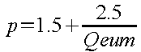 soit p = 3.78 avec Qeum=1.2 l/s
avec p:facteur de pointe (la pratique courante fixe sa limite à 4)
Qeum:débit moyen des eaux usées en l/s
Dans l'exemple traité, le facteur de pointe est ramené à une valeur de 3.5 par le projeteur.
Le projeteur peut également saisir une valeur de débit des eaux claires parasites. L'exemple est conduit avec une valeur de 1.2 l/s correspondant ainsi à un taux de dilution de 100%, seuil souvent considéré comme acceptable par les usines de traitement de la pollution.
Ces valeurs permettent d'estimer le débit de pompage théorique ():
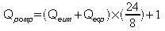 soit Qpomp =(1.2 + 1.2) x 3 + 1 = 8.20 l/s
Le projeteur doit alors fixer le débit réel de pompage (2) qui doit être au minimum au débit de pompage théorique (9 l/s retenu pour l'exemple en cours).
Le diamètre théorique de la canalisation (3) est ensuite estimé pour une vitesse d'écoulement de 1 m/s (par défaut la canalisation est supposée en fonte).
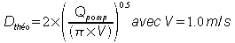 Soit 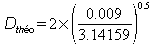 = 0.107 m ou 107 mm
Le second onglet permet de préciser les données topographiques et géométriques du refoulement.
Le projeteur doit préciser :
la longueur de la canalisation de refoulement (623 m)
le matériau et le diamètre commercial correspondant à ce matériau. Concernant le diamètre, il est en général recommandé un minimum de 100 mm mais le projeteur peut néanmoins conduire un calcul avec un diamètre inférieur. Pour l'exemple il est retenu une canalisation PEHD de diamètre extérieur 110 mm soit un diamètre intérieur de 85 mm.
Les cotes des divers niveaux
du terrain naturel (218.12)
du fil d'eau de la canalisation d'arrivée au poste (215.48)
du fil d'eau de la canalisation de refoulement au départ du poste (216.98)
du fil d'eau de la canalisation de refoulement à son extrémité (226.25)
Le diamètre de la canalisation et la longueur du refoulement permettent d'estimer la perte de charge linéaire estimée à ce stade par km de canalisation.
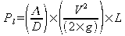
avec une estimation du coefficient de perte de charge L par la formule de COLEBROOK
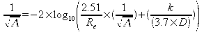 ou Re représente le nombre de Reynolds
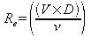
soit  = 87 475
= 87 475
avec une viscosité cinématique n retenue à 1.31 cSt (centiStoke) pour une eau à 10°C (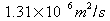 )
L'application de la formule implicite de COLEBROOK impose de procéder par itération.
Ce calcul itératif permet d'estimer L à 0. 02247 et d'en déduire la perte de charge par km
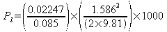 soit 15.04 m/km (1)
L'onglet « Points Singuliers » permet de préciser les équipements particuliers (coudes, vanne, clapet,..) existant sur le parcours de la canalisation de refoulement. Il importe de rappeler que les pertes de charge singulières afférentes aux équipements interne au poste de pompage sont automatiquement intégrés au calcul (voir documentation station de pompage).
Sur l'exemple en cours, 3 coudes à 90° et un dispositif antibélier sont prévus.
Le dernier onglet permet de préciser les caractéristiques de la station de pompage; le projeteur précise :
le nombre de pompes fonctionnant en alternance : 2
le nombre de démarrage par heure : 4
le type et la dimension de la section de la bâche : circulaire de 2 m de diamètre
la hauteur de la garde à l'égout : 0.20 m et la hauteur de la garde au fond : 0.50 m
Ces paramètre permettent d'estimer le volume théorique de la bâche
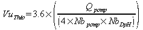 soit 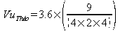 = 1.01 m3 (1)
avec VuThéo: volume utile de la bâche en m3
Qpomp:débit de pompage en l/s
Nbpomp: nombre de pompes
NbDpH:nombre de démarrage par heure
puis de déduire la tranche de pompage théorique
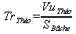 soit 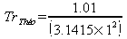 = 0.32 m (2)
Pour finaliser le calcul le projeteur doit saisir la valeur de tranche de pompage retenue dont la valeur minimum recommandée est en général de 0.20 m.
Après cette saisie,ici 0,30 m, l'ensemble des informations sont affichées et un schéma récapitulatif du calcul est affiché.
(1) Volume de la bâche
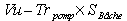 soit 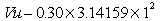 = 0.94 m3
(2) Nombre réel de démarrages
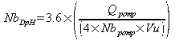 soit 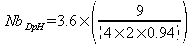 = 3.36
(3) Temps de vidange : c'est la durée de pompage pour vider les 0.94 m3 de la bâche
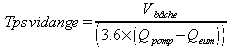 =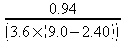 = 0.04 h
(4) Cycle : cette durée correspond au temps d'un remplissage et d'une vidange de la bâche
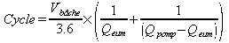 =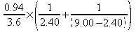 = 0.148 h
(5) NbC : cette information correspond au nombre de cycles nécessaire pour vidanger le volume d'eau contenu dans la canalisation de refoulement.
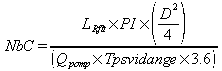 = 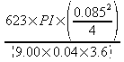 = 2.75
(6) Vitesse moyenne de l'écoulement :
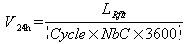 = 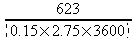 = 0.42 m/s
(7) Temps de séjour :
= 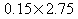 = 0.41 h
(8) Pertes de charge singulières : cette valeur correspond aux pertes de charge dus aux diverses singularités existantes sur le parcours du refoulement (3 coudes à 90°) et pertes de charge singulières interne au poste.
Le coefficient de perte de charge interne au poste est de 4.544 (voir aide paragraphe « singularités »).
Le coefficient pour les coudes est estimé avec un rayon de courbure pris par défaut égal au diamètre intérieur de la canalisation.
Au total le coefficient de perte de charge est de :
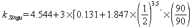 = 5.426
Les pertes de charge des singularités sont donc de :
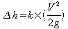 =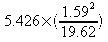 = 0.697 m
(9) Hauteur manométrique totale : représente la somme des hauteurs géométriques et des pertes de charge de l'installation
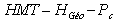 avec 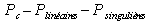
La hauteur géométrique représente le dénivelé entre le niveau à l'extrémité du refoulement (226.25) et le niveau moyen dans la bâche de pompage (215.13).
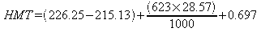 = 29.62 m